grabEAT MealPOD
- Innebygd mikrobølgeovn
- Varmt måltid på bare 3 minutter
- Perfekt for mindre arbeidsplasser
- Kompakt design, krever under 2 kvadratmeter
Våre automatiserte kiosker gir tilgang til ferske, næringsrike måltider og drikke 24/7, både innendørs og utendørs. Med avansert teknologi og solid design sørger vi for sunn mat som er klar når og hvor som helst.

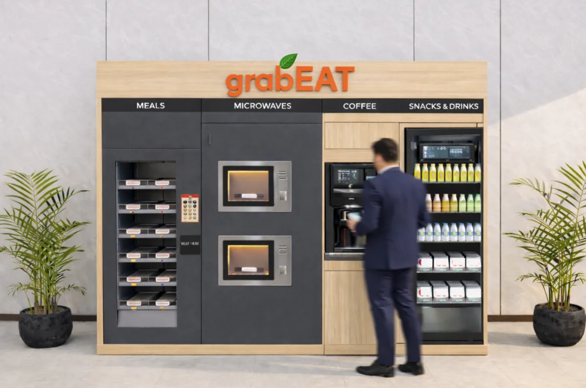
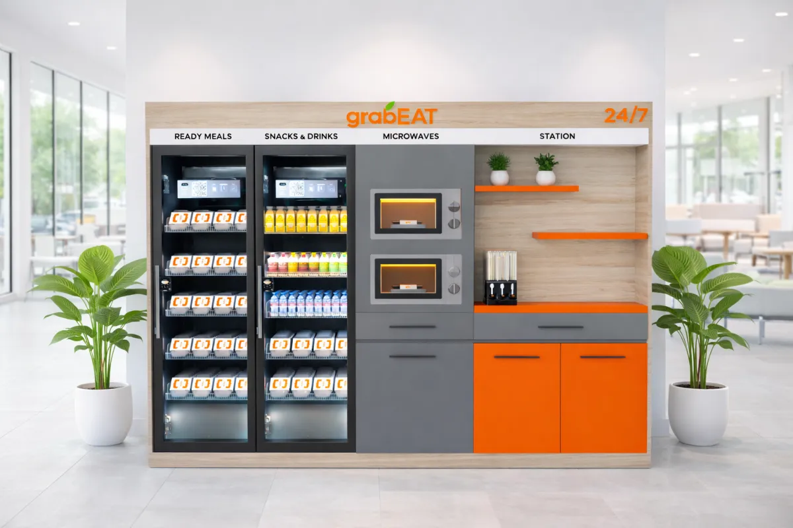
Hos grabEAT vet vi at hver lokasjon har sine egne behov og sitt eget uttrykk. Derfor tilbyr vi omfattende tilpasning av kioskene etter dine krav.
Tilpasningene våre omfatter:
grabEAT bruker avansert teknologi til å levere ferske, næringsrike og varme måltider gjennom smarte kiosker – enkelt for deg og skånsomt for planeten.
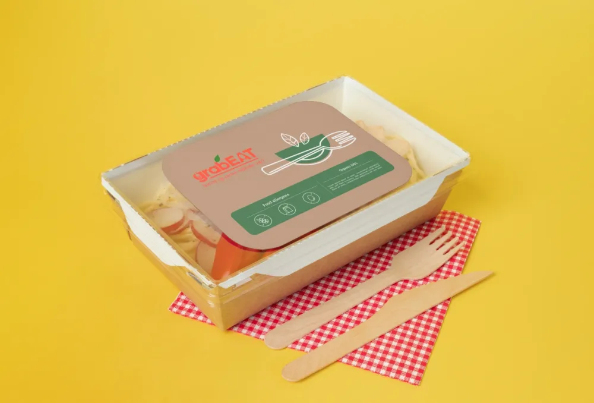
Vår resirkulerbare og miljøvennlige emballasje kombinerer funksjon og bærekraft, og gir en matopplevelse uten dårlig samvittighet – bra for både helsen din og planeten.
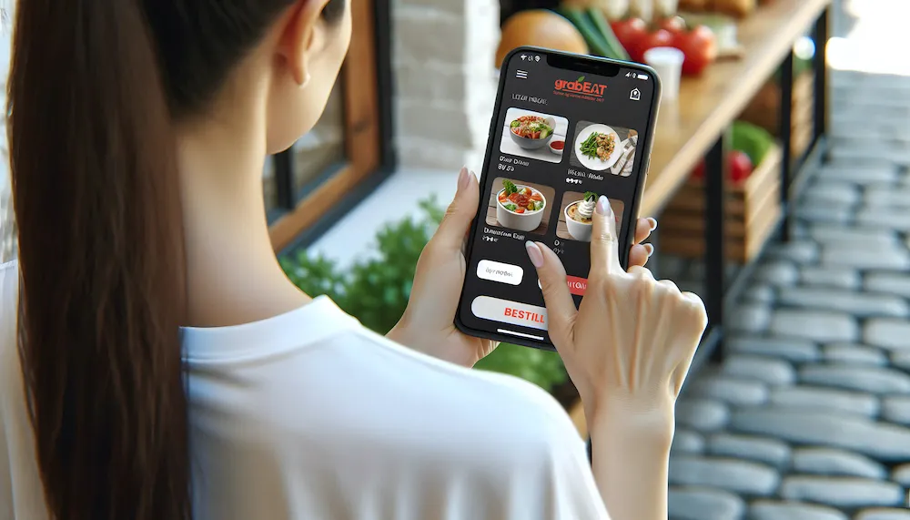
grabEATs bestillingssystem kombinerer kiosk og snart også app, noe som gir en sømløs kundeopplevelse og lavere lønnskostnader.
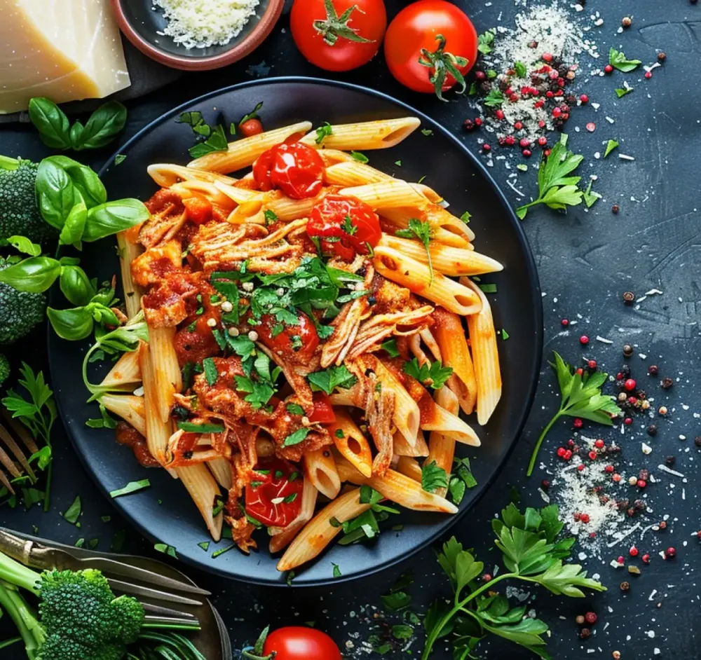
Hos grabEAT tilbyr vi næringsrike måltider av høy kvalitet for en travel hverdag, med et variert utvalg av ferske, balanserte retter, gode råvarer og internasjonale smaker.
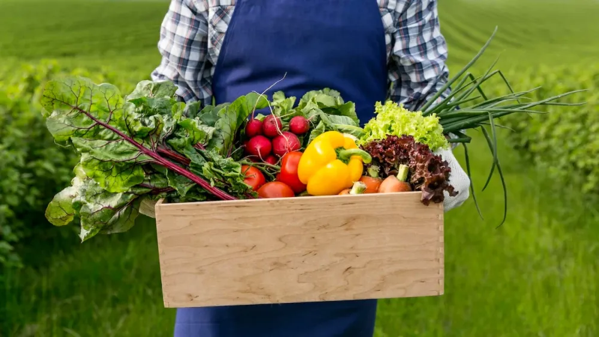
grabEATs forsyningskjede legger vekt på bærekraft og effektivitet, i samarbeid med lokale leverandører av ferske råvarer. Vi sikrer jevn tilgjengelighet, minimalt svinn og støtte til ansvarlige innkjøp og lokal økonomi.
De viktigste fordelene:
Hos grabEAT bruker vi kunstig intelligens (KI) til å forbedre driften av automatene og gi en sømløs og bærekraftig opplevelse. KI gjør oss mer effektive, reduserer svinn og sikrer ferske, næringsrike måltider når som helst.
KI analyserer forbruksmønstre for å optimalisere lageret, redusere svinn og sikre tilgjengelighet.
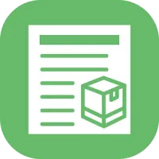
Sanntidsovervåking automatiserer påfylling og sikrer ferskhet.
KI optimaliserer lokale innkjøp, kutter karbonutslipp og reduserer matsvinn.
KI følger med på maskinenes ytelse og reduserer nedetid gjennom proaktive reparasjoner.
Maskinlæring tilpasser måltidsanbefalinger etter brukerens preferanser og kostbehov.
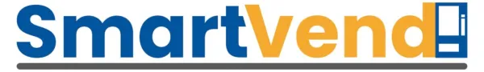
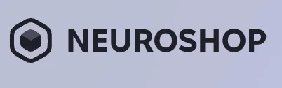
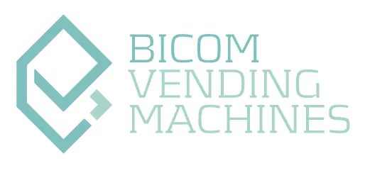
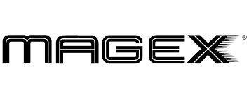
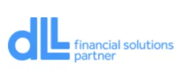